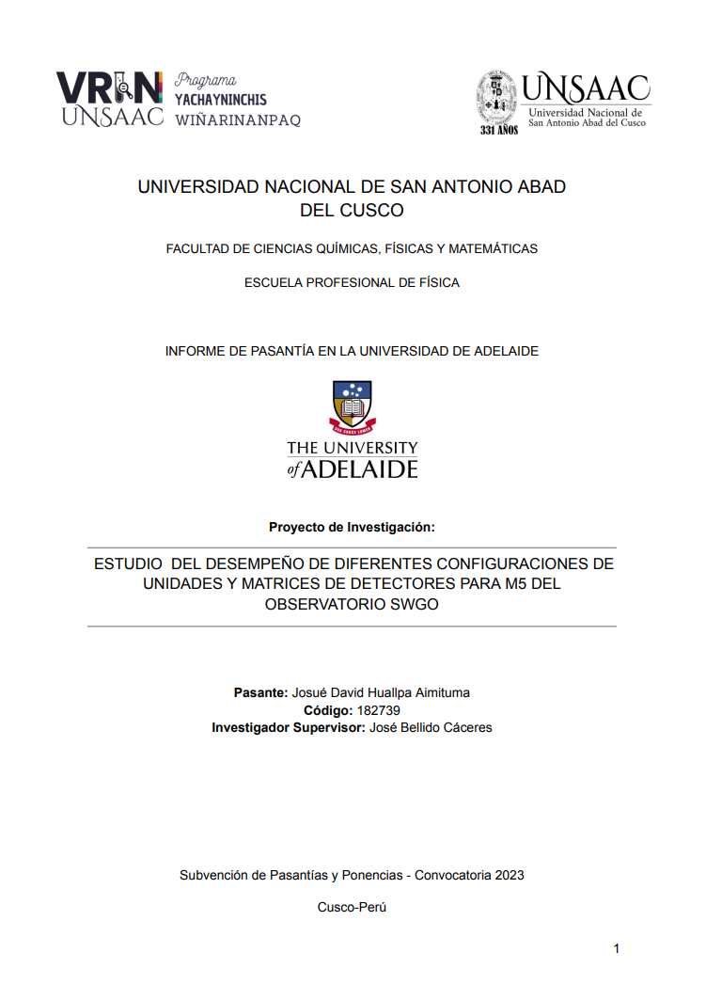
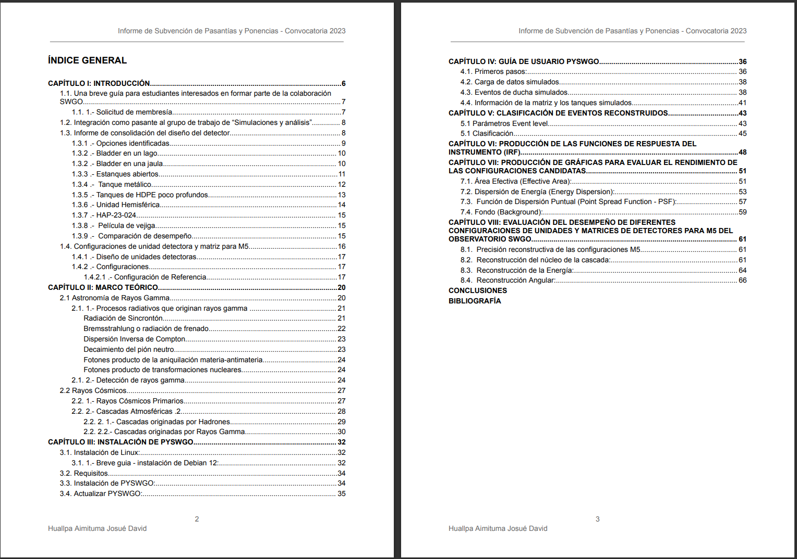
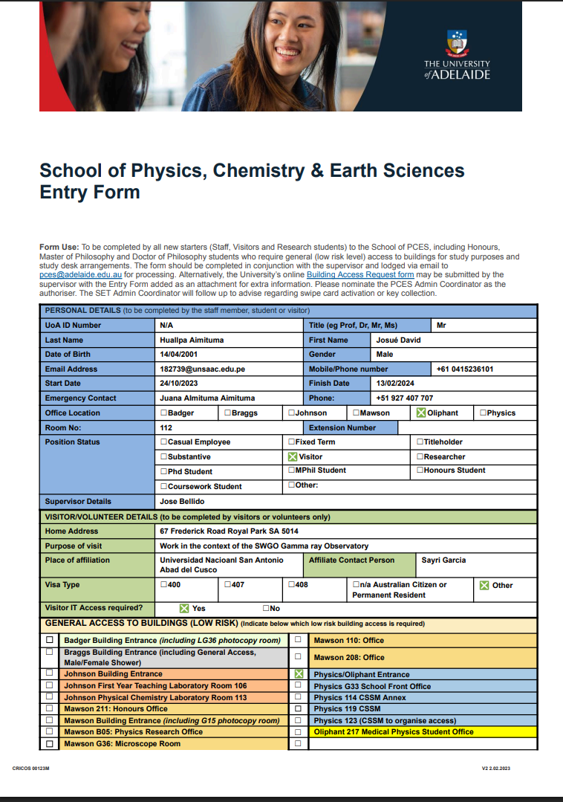
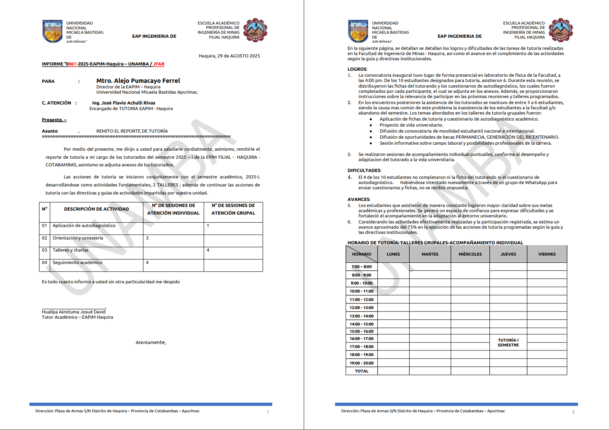
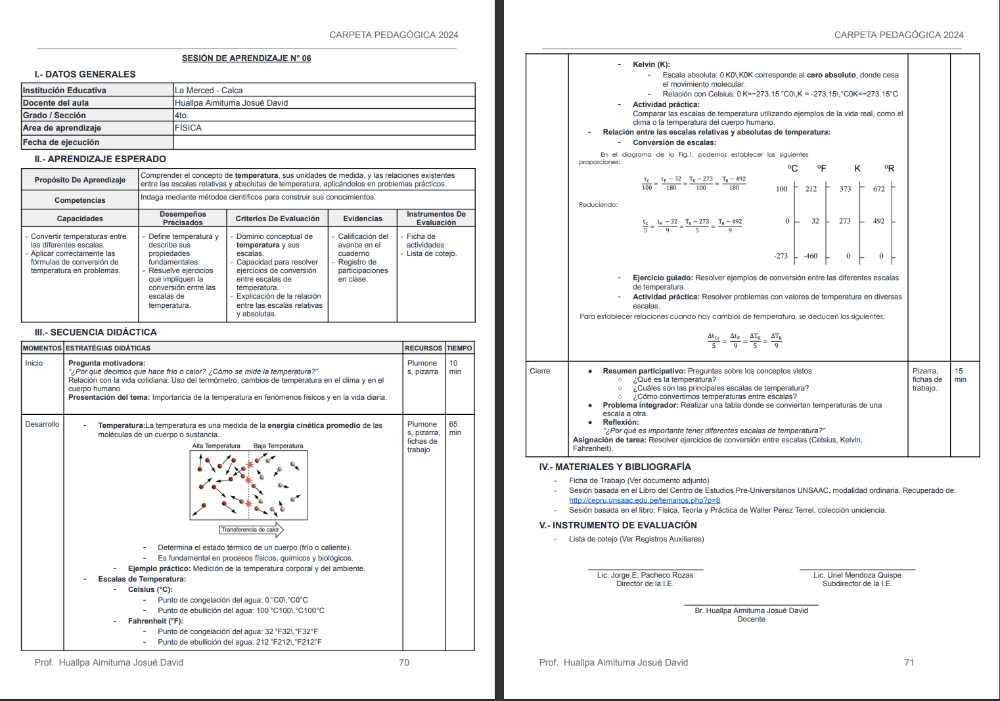

Suite offimática - Procesadores de texto#
Conjunto de programas diseñados para crear, editar y gestionar documentos.
Incluye herramientas para texto, hojas de cálculo, presentaciones, bases de datos, etc.
Microsoft Office#
Word: procesador de texto.
Excel: hojas de cálculo.
PowerPoint: presentaciones.
Outlook: correo y agenda.
Es software propietario y requiere licencia.
{kind=link}
Alternativas Gratuitas y de Código Abierto#
LibreOffice (Windows, macOS, Linux): Writer, Calc, Impress, Base…
Apache OpenOffice: similar a LibreOffice.
OnlyOffice: interfaz moderna, colaboración.
Google Workspace (antes G Suite): Docs, Sheets, Slides en la nube.
WPS Office: versión gratuita con compatibilidad alta.
{kind=link}
Ventajas de las Alternativas Gratuitas#
Sin costo de licencia.
Compatibilidad con formatos de Microsoft Office.
Multiplataforma y en muchos casos de código abierto.
Actualizaciones frecuentes y comunidad activa.
Práctica 01#
Objetivo: Aprender las herramientas básicas de la suite de google docs, diseñando una carátula básica e indice de contenídos para un trabajo académico.
 {kind=link}
{kind=link}
Práctica 02#
Objetivo: Aprender a manipular tablas e imagenes, diseñando un formulario básico de admisión.
{kind=link}
Práctica 03#
Objetivo: Aprendera diseñar un oficio formal simple
{kind=link}
Práctica 04#
Objetivo: Aprender a diseñar a manipular tablas diseñando una plantilla de sesión de aprendizaje educación básica regular.
{kind=link}